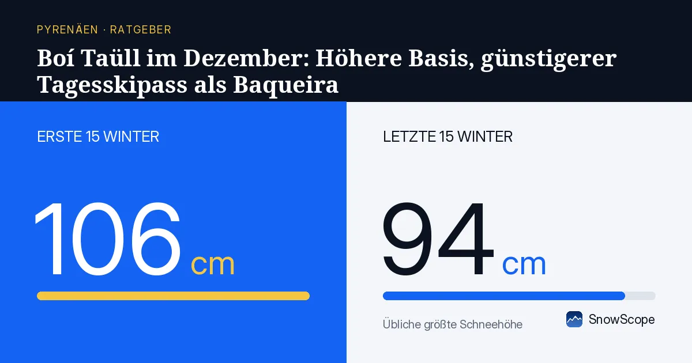

Boí Taüll im Dezember: Höhere Basis, günstigerer Tagesskipass als Baqueira
Für einen günstigen Skiurlaub im Dezember in Spanien bietet Boí Taüll einen höheren Startpunkt und ein günstigeres Tagesticket als Baqueira Beret. Die Lifte starten auf 2039 m mit einem 49,00 EUR Tagesskipass für Erwachsene, verglichen mit der 1.504 m Basis und dem 74,00 € Tagesticket von Baqueira Beret. Trotzdem ist der Schnee Anfang Dezember Glückssache, also ist das Timing wichtig.
Die Live-Schneeprognose für Boí Taüll in der SnowScope-AppSchneehöhen, Pulverschnee-Alarme und 3D-Karte, gratis.
Start in der Höhe auf 2039 m
Eine hohe Talstation heißt: weniger Gefahr, über Gras zum ersten Lift zu laufen, und kein Skigebiet unserer Pyrenäen-Liste startet höher. Das kartierte Gebiet von Boí Taüll reicht von 2.039 m bis 2.747 m, mit 708 m Höhenunterschied, 35 km Pisten und 9 Liften. Der erste dauerhafte Schnee kommt meist am 9. November unten, am 4. November an der Mittelstation (2.393 m) und am 3. November am Gipfel.
Die heutige Schneeschätzung vom 13. November zeigt einen ruhigen Start: 0 cm an der Basis und 5 cm auf halber Höhe und am Gipfel, mit 0 cm, 4 cm und 6 cm Neuschnee in den nächsten 7 Tagen. Vom 13. bis 26. November liegt die zweiwöchige Prognose bei 13 bis 36 cm auf halber Höhe und darüber, aber das ist keine Garantie.

Schnee-Chancen im Dezember
Basierend auf unserer Schneehistorie aus 46 vergangenen Wintern (1980-81 bis 2025-26) startet der Dezember eher mager. An der 2039 m Basis liegt der Durchschnitt im Dezember bei 16 cm (17 cm am 15. Dezember), unter 1 cm in einem schneearmen Winter (1 von 10) und über 52 cm in einem schneereichen Winter. Auf halber Höhe (2.393 m) sind es im Schnitt 25 cm (24 cm am 15. Dezember; mager unter 3 cm, reichlich über 71 cm), während der 2.747 m hohe Gipfel im Schnitt 34 cm aufweist (32 cm am 15. Dezember; mager unter 4 cm, reichlich über 90 cm).
Woche für Woche zahlt sich ein späterer Termin aus. Vom 1.-7. Dezember liegen 30 cm oder mehr in 15 % der vergangenen Winter an der Basis, 35 % auf halber Höhe und 41 % am Gipfel (50 cm oder mehr: 2 %, 11 %, 20 %). Vom 8.-14. Dezember erreicht man 30 cm oder mehr in 24 %, 41 % und 43 % der Fälle (50 cm oder mehr: 9 %, 17 %, 30 %). Bis zum 15.-21. Dezember steigen die Chancen auf 30 cm oder mehr auf 30 %, 48 % und 57 % (50 cm oder mehr: 9 %, 22 %, 37 %). Vom 22.-28. Dezember erreicht man 30 cm oder mehr in 39 %, 54 % und 63 %, mit 50 cm oder mehr in 15 %, 33 % und 46 % der Fälle.
Was der Pass kostet
Auf der offiziellen Website von Boí Taüll kostet ein 1-Tagespass für Erwachsene (25-64 Jahre) 49,00 EUR. Mehrtagespässe und Unterkünfte wurden nicht geprüft, nutze also diesen Tagessatz für deine Planung und prüfe die offizielle Website vor der Buchung. Für 35 km markierte Pisten hält das die Liftkosten moderat.
Im Vergleich zu Baqueira Beret
Baqueira Beret ist größer, mit 154 km markierten Pisten, 36 Liften und 1.096 m Höhenunterschied zwischen 1.504 m und 2.600 m. Auf der offiziellen Website für 2026-27 kostet ein 'Baqueira Ticket' für Erwachsene 74,00 € (70,00 € mit der wiederaufladbaren 'Baqueira Pass'-Karte), und ein 6-Tages-Ticket kostet 359,00 €. Der 49,00 EUR Pass von Boí Taüll hält die täglichen Kosten niedriger.
Beim Schnee im Dezember schlägt die Höhe von Boí Taüll Baqueira Beret auf jeder Ebene. Die 1.504 m Basis von Baqueira Beret hat im Schnitt 8 cm (9 cm am 15. Dezember; 0 cm in einem mageren Winter, über 37 cm in einem reichen Winter), mit 30 cm oder mehr in 4 %, 11 %, 15 % und 20 % über die vier Dezemberwochen. Die 2.052 m Mittelstation hat im Schnitt 20 cm (19 cm am 15. Dezember; mager unter 2 cm, reichlich über 56 cm), mit 30 cm oder mehr in 22 %, 30 %, 35 % und 41 %. Auf 2.600 m sind es im Schnitt 30 cm (30 cm am 15. Dezember; mager unter 3 cm, reichlich über 77 cm), mit 30 cm oder mehr in 39 %, 46 %, 52 % und 59 %, und 50 cm oder mehr in 13 %, 22 %, 30 % und 37 %.
Der letzte Winter und der langfristige Blick
Der Dezember des letzten Winters (2025-26) war in Boí Taüll mager, mit durchschnittlich 9 cm an der Basis, 14 cm auf halber Höhe und 19 cm am Gipfel. In unserer Schneehistorie reichte der Dezember von 2016-17 (1 cm an der Basis, 2 cm auf halber Höhe und am Gipfel) bis 2021-22 (67 cm, 94 cm und 121 cm). Übliche Winter erreichen Spitzenwerte von 77 cm, 109 cm und 154 cm über 142, 162 und 167 Schneetage.
Ein Vergleich der ersten 15 Winter (1980-81 bis 1994-95) mit den letzten 15 Wintern (2011-12 bis 2025-26) zeigt einen kleinen Rückgang der Dezember-Mittelwerte: von 15 cm auf 12 cm an der Basis, von 22 cm auf 20 cm auf halber Höhe und von 30 cm auf 28 cm am Gipfel. Der frühe Dezember bleibt unsicher, also fahr hoch hinaus und wähle spätere Wochen.
Tipps für Skifahrer
- Ziele auf den 15.-21. Dezember oder 22.-28. Dezember ab, wenn der 2.747 m hohe Gipfel in 57 % bzw. 63 % der vergangenen Winter 30 cm oder mehr erreicht, statt nur 41 % vom 1.-7. Dezember.
- Fahre zwischen der Mittelstation (2.393 m) und dem Gipfel (2.747 m), wo die üblichen Dezember-Schneehöhen 25 cm und 34 cm betragen, statt 16 cm an der Basis.
- Buche deinen 49,00 EUR Erwachsenen-Tagesskipass (25-64 Jahre) auf der offiziellen Website von Boí Taüll und prüfe dort die Preise für Mehrtagespässe.
- Lies jeden Morgen den Lawinenlagebericht, bevor du abseits der Pisten fährst, besonders nach Stürmen oberhalb von 2.393 m.
Weitere Karten (externe Seiten)
Quellen und Nachweise
- Boí Taüll, official lift pass prices (tarifes) pirineu365.cat/boitaull/estacio/tarifes/
- Baqueira Beret, official prices (tarifas), season 26-27 www.baqueira.es/es/tarifas
- SnowScope, December snow at three heights and today's snow map snowscope.app/
Zu diesen Zahlen
Aktueller Schnee und Zwei-Wochen-Ausblick: SnowScope-Prognosen (Ausblick aus ECMWF und GFS, eine Spanne, kein Versprechen). Lifte und Pisten: OpenSkiMap-Kartierung. Preise: die offiziellen Seiten unten, gelesen am 2026-11-13; Preise können sich ändern, vor der Buchung prüfen.
Offizielle Lawinenlageberichte: ICGC – Butlletí de perill d'allaus (Catalunya)
Diesen Bericht zitieren
Für Forschung, Lehre oder Presse: Zahlen und Grafiken sind unter CC BY 4.0 mit dieser Quellenangabe frei nutzbar.
SnowScope (2026), Boí Taüll im Dezember: Höhere Basis, günstigerer Tagesskipass als Baqueira, https://snowscope.app/blog/de/2026/11/boi-taull-december-ski-highest-pyrenees-base-2026.html, abgerufen am 2026-11-14
SnowScope (Atlas Labs). (2026, November 14). Boí Taüll im Dezember: Höhere Basis, günstigerer Tagesskipass als Baqueira. SnowScope snow reports. https://snowscope.app/blog/de/2026/11/boi-taull-december-ski-highest-pyrenees-base-2026.html
BibTeX
@misc{snowscope2026boitaulldecemberskihighe,
author = {{SnowScope (Atlas Labs)}},
title = {Boí Taüll im Dezember: Höhere Basis, günstigerer Tagesskipass als Baqueira},
year = {2026},
month = nov,
howpublished = {\url{https://snowscope.app/blog/de/2026/11/boi-taull-december-ski-highest-pyrenees-base-2026.html}},
note = {Published 2026-11-14 20:01 UTC; accessed 2026-11-14}
}· CC BY 4.0 · Methoden, Daten und Werkzeuge →
Boí Taüll: Schnee und Temperatur nach Höhe, dieser Winter vs letzter (Werkzeuge) →
Boí Taüll folgen
Gratis: eine Nachricht, wenn Neuschnee kommt, und jeden Morgen die Vorhersage.